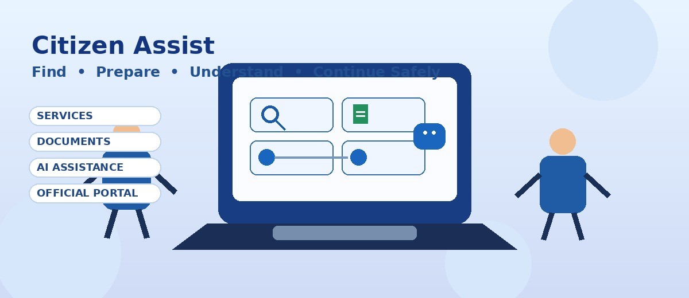

Find your service
01
Find the right service
Start with your need instead of searching through complicated government websites.
Find, understand and use government digital portals through simple steps, document checklists and official links.

Ask Citizen Assist AI about documents, steps, eligibility or where to continue.
Start with your need instead of searching through complicated government websites.
Use a clear checklist so citizens know what to keep ready before they apply.
Simple instructions make forms, appointments, payments and status checks easier to follow.
AI Assistance explains the process while reminding users never to share OTPs or passwords.
Citizen Assist guides users, then sends them to the correct official destination for the actual application.
Understand new PAN application, required documents, status and next steps.
Get guidance for common Aadhaar services, updates and e-Aadhaar tasks.
Prepare for fresh passport, reissue, payment and appointment steps.
Follow simple guidance for learner, permanent licence and related services.